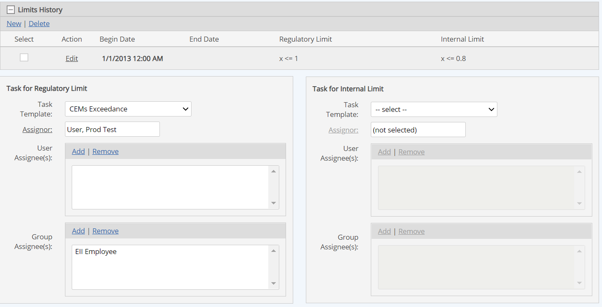
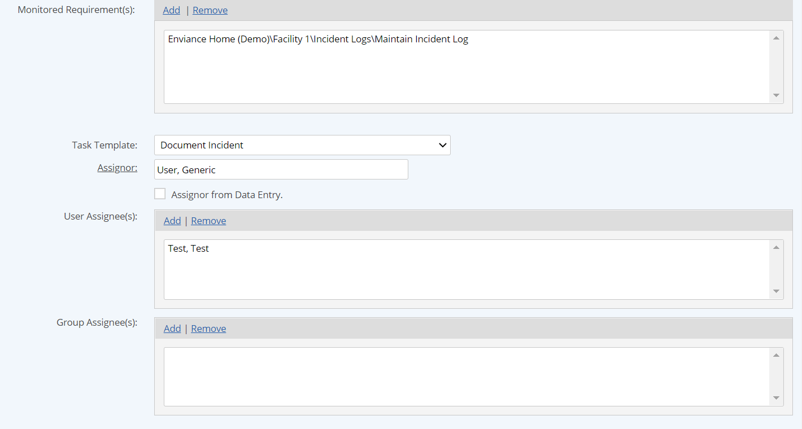

A task template may be applied to:
A new task at the time of creation.
An existing task, to replace prior setup for notifications and associated documents and to add or replace workflow triggers.
A regulatory or internal limit for a numeric requirement, in order to automatically trigger a task when the limit is exceeded.
An Event Log, in order to automatically trigger a task when an event occurs.
To apply a task template to a new task, select the task template to apply in the first task creation screen. You may also select New Task Template to create one. See Task Templates and Create New Task for more information.
Click Save.
A warning dialog informs you that all calendar options, associated documents, notifications and workflow triggers previously configured for the task will be lost. These options will be replaced with any options specified in the task template, so be sure that any of these options you want to keep are defined on the task template.
In the Limits section of the properties form for the requirement (in create or edit mode), select the task template from the dropdown list.
You may assign a task template to either the regulatory limit or the internal limit, or both.
Click Add for the User Assignee(s) or Group Assignee(s) box and select the user/group(s) to assign to the task from the selection window.

Click Assignor and select a user for the task assignor from the selection window.
Optionally, to designate that the Assignor be the creator of the event in a manual Event Log, check Assignor from Data Entry.
